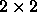
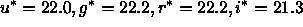
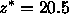

The pipeline analyzes the data one field (§ 3.5) at a time. Because information about each object is contained in five separate frames, one for each filter, the five frames for each field are processed together.
Each frame has instrumental signatures (flat field, bias, cosmic rays, and bad columns) removed, and the global sky value from the psp subtracted. The CCDs are known to be non-linear by of order 2% near saturation; this is not corrected for in the current version of the pipeline. Cosmic rays are found as objects with gradients between adjacent pixels substantially steeper than allowed by the PSF and are interpolated over. Note that our images are marginally well-sampled in 1'' seeing. Previously recognized bad columns are interpolated over using linear prediction (e.g., Rybicki & Press 1992), as are bleed trails from saturated stars.
Objects containing a (found and interpolated-over) cosmic ray are flagged by having the mask bit CR set in flags for that band; objects with any interpolated pixels in them at all (due to bad columns or bleed trails) are flagged by having INTERP set. INTERP_CENTER indicates that a pixel was interpolated over within 3 pixels of the center of the object, and PSF_FLUX_INTERP indicates that at least 20% of the PSF flux is interpolated; in rare cases, photometry of objects with these latter two flags set might be suspect.
Next, objects in the frame are detected and their properties measured in a four step process in each band. First, an object finder is run to detect bright objects. In each band, the object-finder detects pixels which are more than (corresponding roughly to ) above the sky noise; only a single pixel need be over this threshold for an object to be detected at this stage. These objects are flagged as BRIGHT. The extended power-law wings of BRIGHT objects which are saturated are subtracted from the frame. Such stars are marked SUBTRACTED. Then, the sky level is estimated by median-smoothing the frame image on a scale of approximately 100 arcsec; the resulting ``local'' sky image is subtracted from the frame (remember that a global sky determined on an entire frame has already been subtracted). This sky level is stored for each object for each band in the parameter sky (and an associated uncertainty skyErr), in units of asinh magnitudes (§ 4.4.5) per square arcsec. For children of blends (§ 4.4.3), the sky parameter includes the contribution of its siblings.
Third, we find objects by smoothing the image with a Gaussian fit to the PSF, and look for peaks over the (smoothed) sky in each band. After objects are detected, they are ``grown'' more-or-less isotropically by an amount approximately equal to the radius of the seeing disk. We then define an object to be a connected set of pixels which are detected in at least one band. Note that all pixels in the object are subsequently used in the analysis in every band, whether or not they were originally detected in that band. The photometric pipeline never reports an upper limit for the detection of an object, but rather carries out a proper measurement, with its error, for each of the varieties of fluxes listed in § 4.4.5.
Objects detected in a given band at this stage are flagged by setting the mask
bit BINNED1 (Table 9) in flags of the PhotoObj
class in that band. All pixel values in these BINNED1 objects are then
replaced by the background level (with sky noise added in), the frame is
rebinned into a  image, and the object-finder is run again. The
resulting sample is flagged in a similar way with the BINNED2 mask, and
pixel values in these objects are replaced with the background level.
Finally, we rebin the original pixel data at  , and objects found at
this stage are flagged BINNED4. The set of detected objects then
consists of all objects with pixels flagged BINNED1, BINNED2, or
BINNED4.
, and objects found at
this stage are flagged BINNED4. The set of detected objects then
consists of all objects with pixels flagged BINNED1, BINNED2, or
BINNED4.
Fourth, the pipeline measures the properties of each object, including the position, as well as several measures of flux and shape, described more fully below. It attempts to determine whether each object actually consists of more than one object projected on the sky, and if so, to deblend such a ``parent'' object into its constituent ``children'', self-consistently across the bands (thus all children have measurements in all bands). Then it again measures the properties of these individual children. Bright objects are measured twice: once with a global sky, and no deblending run; this detection is flagged BRIGHT, and a second time with a local sky. For most purposes, only the latter is useful, and thus one should reject all objects flagged BRIGHT in compiling a sample of objects for study.
Other flag bits listed in Table 9 that are useful at this stage are:
Finally, the pipeline outputs the measured quantities for each object, including all of the BRIGHT objects, all the parents, and all the children. In the following sections, we discuss how to interpret these outputs.
A typical frame at high Galactic latitudes contains of order 1000 objects, including of order 5 objects chosen deliberately in regions where no objects are detected; these are used to place sky fibers for spectroscopy, and are classified as Sky. Repeat observations of a given area of sky in roughly 1.5'' seeing shows that our 95% completeness limit for stars is , and ; the completeness drops to zero over roughly half a magnitude. These numbers are somewhat worse than quoted in the SDSS Project Book york00, as that calculation assumed 1'' seeing and slightly broader filters.